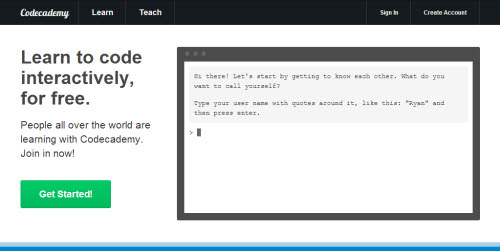
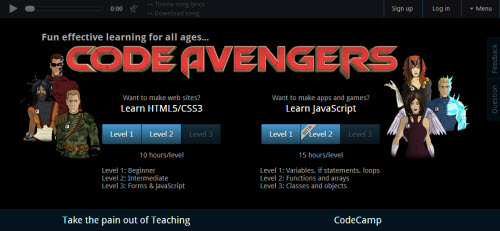
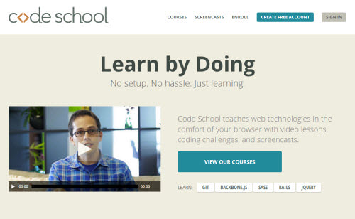
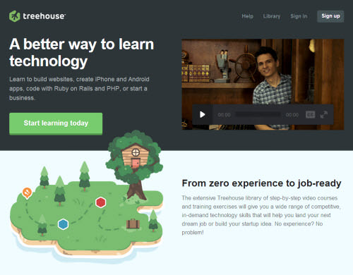
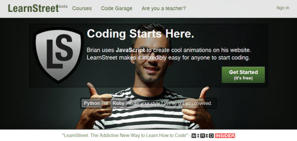
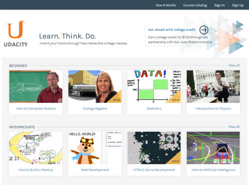
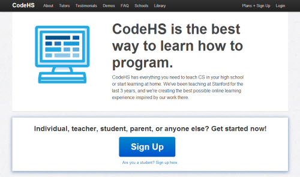
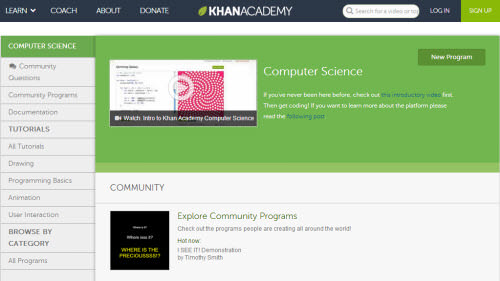
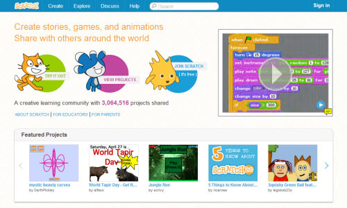
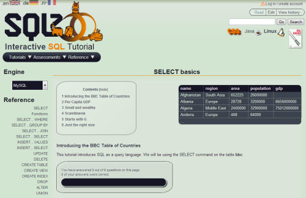

Top Programming sites for Beginners
Gone are the days when programming languages could only be mastered programmers like Bill Gates, who later got to dominate the world by storm. Now everyone holds the same potential, and the chance to learn and even master programming language
Kickstart the beginning of your new path into programming today!
Codecademy is indisputably the most famous website to teach you to code interactively, thanks to its helpful interface and well-structured courses. Upon visiting the main page, you can already start tasting the programming right away, with its motivating on-screen console. Pick a course that Codecademy offers from Web Fundamentals, PHP, JavaScript, jQuery, Python, Ruby and APIs.
Inside each lesson is a panel that explains necessary code and instruction. Another panel allows you to get your hands dirty by writing acceptable code, then checking if you are doing the right thing. Don’t worry about making mistakes, as both instruction and code panels will warn you of errors, and provide hints. It is as if there’s a kind teacher right beside you.
Code Avengers is designed to make you love programming. Though it only offers HTML5, CSS3 and JavaScript course for now, each of the courses is carefully designed to truly entertain you while leveling your programming skills painlessly. At the end of each lesson you also get to play a mini game to release your cumulated stress, and keep you going for longer.
Code Avengers has a gradual approach to interactive learning. It does not explain too much knowledge that isn’t essential for beginners, just a bit of code and playful instruction, making things very easy to digest. You also get to play with the code, then see the impact of the changes immediately. It is carefully crafted with the beginner’s comfort in mind.
After you finished courses in Codecademy or Code Avengers, and you are ready to further expand your capabilities, Code School is the next quality website you should land on. Unlike most interactive learning sites, Code School offers more in-depth courses to train and turn you into an expert with the industry’s best practices.
Almost all courses are aggressively polished with impressive design and informative screencasts, though the challenges after the screencast might bit a bit hard for amateurs. Luckily, there are hints and answers to refer to. While most of the offered courses are free, certain ones will require you to spend $25/month to access the entire course including all screencasts and challenges, and also all other courses in Code School.
Treehouse courses are more project-oriented than language-oriented, so they are perfect for novice programmer with a planned purpose, such as building a website, or an application. For example, the Websites course is all about building a responsive website, interactive website or even WordPress theme – a very practical and efficient way to master related languages. Nonetheless, they have released a plethora of foundation courses with a video-then-quiz approach.
For Treehouse, every course is divided into different stages or modules, and beyond every first stage the learner will be invited to pay a monthly subscription fee of $25 to access all courses with 650+ videos, and an exclusive Treehouse Members Forum as a bonus. If you are serious about your programming future, you could subscribe the $49 monthly plan to obtain in-depth interviews with leading industry pros and cutting-edge workshops.
If you are that kind of personnel who do not fancy playful design and prefer to deal with cold hard codes, LearnStreet is probably your thing. It currently offers JavaScript, Python and Ruby courses at beginner level. With a click on the ‘Start Course’ button you will start the lesson with an exercise, a code interpreter and a glossary panel (for new programming terms).
LearnStreet adopts command prompt-styled code interpreters with human language to explain function and encourage you whenever possible, the kind of command prompt you want for your own local machine. However, the code interpreter could be as rude as standard command prompt, as most of the times it requires you to type in the absolute same code and content it asks for.
Other than that, it’s truly friendly and enjoyable, and most importantly, free.
Udacity is the unification of insightful video lectures and improved quizzes to achieve the interactive feel for students, so it’s ideal for those who don’t like to read but rather get explanations from industry professionals such as Google employees.
You will be given a screencast from pros discussing the topics and instructions, then you will take either logic or programming quizzes to strengthen your understanding or forge it into a skill. The good thing about Udacity is it provides more videos than any other site, and the instructors are either real-life professors or industry veterans.
The only pitfall here is most courses are not much related to each other, so Udacity is probably not your starting point, but a virtual university to further your study.
At this point all websites you read here are mainly dedicated to web development and computer science, but CodeHS is one with simple and fun game programming lessons that involve problem solving, JavaScript, animation, data structures, game design and puzzle challenges.
The advantage of CodeHS is it teaches you to think, and solve a problem like a programmer with its first course, Programming with Karel. The lessons are fun as you will learn how to use the code to move the dog, Karel to complete given tasks and puzzles like picking up ball and building a towel. It plants a solid concept of programming and the way it solves the problem systematically in your mind.
Other than the course mentioned above, you must sign up first with $25 per month to continue your learning journey, but it’s a perfect site to learn basic game programming effectively.
Although Khan Academy’s courses are not as structured as CodeHS, it serves as an open playground for both novice and amateurs particularly interested in learning drawing, animation and user interaction with code. It does not preach any specific programming language, but the code pattern it adopts can be applied anywhere, as a majority of languages share the similar programming pattern.
You can first join the Programming Basics course to watch and learn basic concepts, then explore the given code after the video tutorial to validate your doubts. With Khan Academy, you can save your modification as a Spin-Off for everyone to enjoy and customize. There have been hundreds of spin-offs just from one lesson in one course, so imagine the community size, and the lesson’s effectiveness.
Think CodeHS and Khan Academy are still too hardcore for your child, who has no comprehension beyond basic English? No worries, there is something even easier for your aspiring next-gen programmer, and it’s called Scratch. Previously an offline software that allow kids to create, upload and share their projects proudly, Scratch is now fully online with its 2.0 successor.
It’s not about programming though, but a combination of visual blocks of commands that tell assigned objects how to behave, such as telling the cat to move 10 steps, or yell ‘meow’ when it touches the owner’s leg. By using this visual programming method, the young programmers will form a habit of breaking a problem into smaller blocks, and solve them one by one logically.
Structured Query Language (SQL) is just a language purely designed to store and retrieve data from a database, so imagine the boredom you will experience when programming a warehouse. Yet SQLZOO wants you to learn SQL happily with its interactive interface and smileys.
Since there is really nothing too deep to explain for a straightforward language like SQL, the site will only ask you to replace the variables like city names or population number, and raise the difficulty from that level. One huge let-down will be the shortage of hints, answers and forum, so you are probably doomed if you fail to solve any one of the quizzes, just like old times.